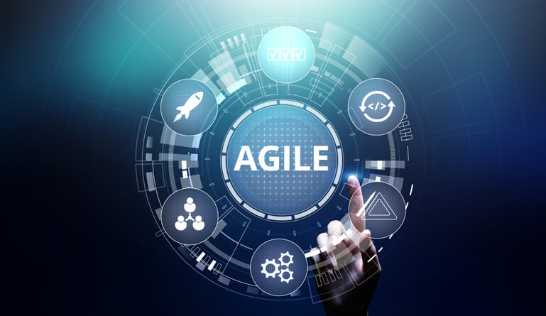

Metodologia Agil - O Que é?
Visando resolver os problemas do modelo de desenvolvimento de software tradicional, em meados dos anos 1980, surge um modelo de metodologia chamado SCRUM, que consistia em um processo de desenvolvimento iterativo e incremental.
O SCRUM é apenas um dos métidos ágeis existentes, e pode ser combinado com outros métodos, como um dos mais famosos também, o XP - Extreme Programming.
A metodologia ágil de um projeto de software, é uma metodologia que incentiva a comunicação, desta forma as diversas áreas envolvidas em determinado projeto tendem a ter uma grande interação. Deve haver uma interação mútua de todas as partes do projeto, desde o cliente final até os técnicos de infraestrutura.
A metodologia ágil de um projeto de software proporciona tornar a determinada finalidade do processo mais rápida e interativa,trazendo novas maneiras de administração de equipe, tendo em vista as formas diferentes de se trabalhar nesta metodologia.
Ainda nesse contexto, o SCRUM por exemplo, é composto de papéis definidos, e diversas etapas que devem ser executadas em prazos relativamente curtos, com o propósito de entregar o que foi proposto sem perder a qualidade do produto, atendendo as expectativas do cliente.
Dentro do SCRUM, existem alguns personagens chaves para que se tenha êxito na sua execução
➢ Product Owner
Mais conhecido como o termo “PO”, o Product Owner, é responsável por ter a visão completa de tudo que será feito e desenvolvido, das necessidades dos clientes que devem ser atendidas, o que deve ser feito para atender ao público que utilizará o novo produto. O PO, é a voz do cliente perante o time de desenvolvimento, é ele que faz o intermédio entre cliente e desenvolvedores, analistas, Scrum Masters. É ele que tem o dever de manter todos na mesma direção e focados nas principais metas passadas pelo cliente.
➢ Equipe / Team
São aqueles que colocam a mão na massa, desenvolvedores, analistas, designs, redatores. São eles que fazem a coisa acontecer, desenvolvendo o produto de acordo com os pedidos do cliente, sempre visando a melhor forma possível de fazer entregas aceitáveis, executando rapidamente sem comprometer a qualidade.
➢ Scrum Master
O Scrum Master é responsável por facilitar o trabalho do time em seu dia a dia. O Scrum Master trabalha como um organizador de todo o projeto, organizando reuniões, entregas e voz do time. Se o PO é a voz do cliente, o Scrum Master atua como a voz do time, visando manter o bem-estar de todos, vendo as melhores formas de trabalho, organizando os momentos das entregas e facilitando para que o time trabalhe da melhor forma possível.